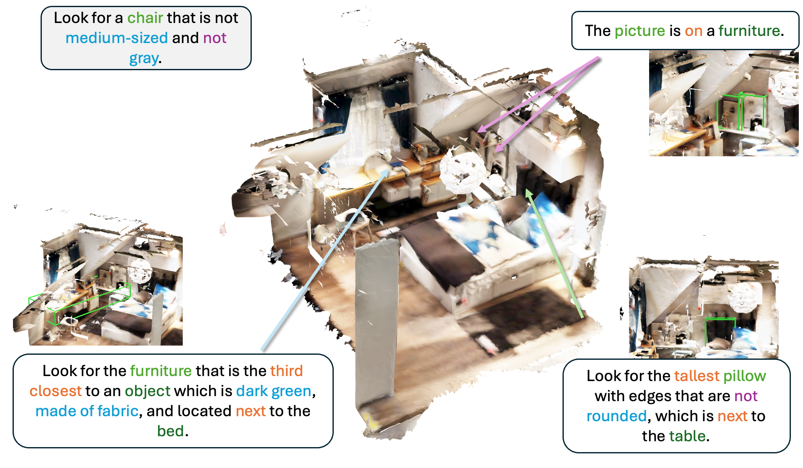
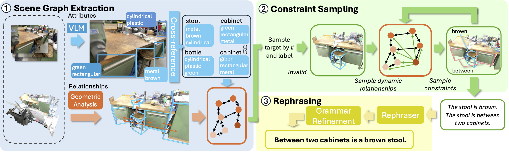
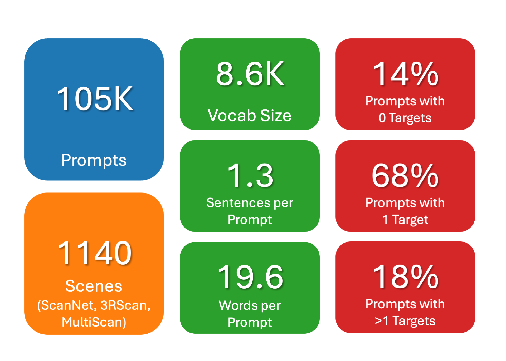
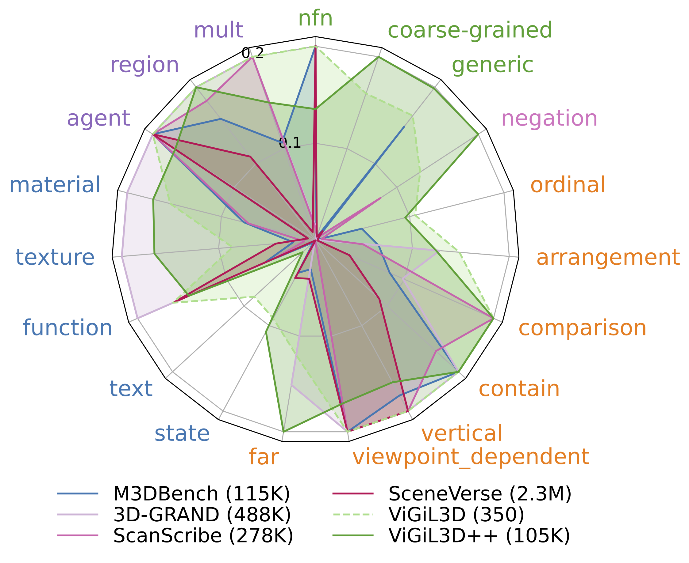
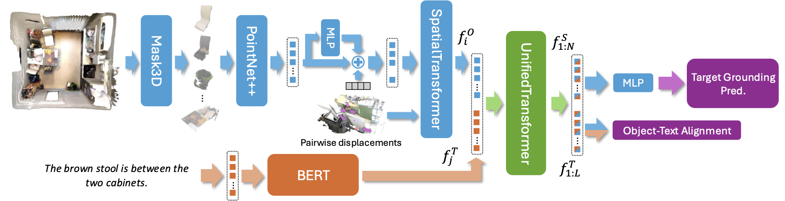
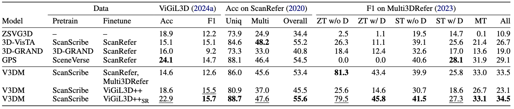

Developing robust models for 3D visual grounding (3DVG), the localization of entities in a 3D scene described in natural language, is important for enabling agents to correspond language descriptions with objects in the physical world. However, the lack of diverse descriptions at scale prevents models from generalizing beyond simple linguistic patterns. Recent such attempts lack diversity in the constraint types and language used to ground objects. Captioning methods cannot precisely contrast objects, which is important for visual grounding. We therefore propose ViGiL3D++, a scalable, scene-agnostic method that generates diverse visual grounding prompts by combining constraint sampling on scene graphs with the language generation of LLMs. We demonstrate its value through higher diversity over existing scaled datasets and as a training set, with improved model performance over several 3DVG benchmarks.


We design a fully automated pipeline that generates a diverse set of visual grounding prompts that describe target objects in the scene given a point cloud and RGB images of a scene. Our method improves on existing solutions by 1) enforcing consistency in attribute assignment through cross-referencing, 2) enabling diverse attribute and relationship types through more comprehensive scene graph extraction and constraint sampling, and 3) improving linguistic variation using in-context rephrasing.
To achieve this, we frame our problem as constraint synthesis: for a scene and a set of target objects, we sample a set of constraints whoes only satisfying solution is the set of target objects. We break this down into several steps. First, we extract a cross-referencing scene graph by parsing attributes using a VLM from multi-view images of each object and relationships through geometric analysis. Secondly, for each prompt, we sample targets conditioned on the prompt type (zero-, single-, or multi-target) and label. Constraints are iteratively sampled from the scene graph until the targets are appropriately constrained. Lastly, we use an LLM to rephrase the templated constraints into a natural language description.
Scene Graph Extraction. To construct a pool of attributes and relationships for constraint sampling, we extract a scene graph from the input scene using a VLM and geometric methods. Initializing objects from a segmentation of the scene, we use a VLM to parse attributes of objects from multi-view images, cross-referencing objects for similarity to ensure that objects with identical appearance are assigned the same attributes. We then use layout estimation to predict room boundaries and extract relationships within each room between objects through geometric analysis augmented by VLMs.


We showcase the capabilities of ViGiL3D++ for training by generating a large 3DVG dataset from a range of scene datasets (ScanNet, 3RScan, and MultiScan), including zero-, single-, and multi-target descriptions. We find that our dataset has comparable or higher linguistic diversity than existing scaled 3DVG datasets, representing a wider range of attribute and relationship types and linguistic patterns. Furthermore, ViGiL3D++ generates descriptions with higher validity rates than baselines (using images, captions, or scene graphs) as well as existing methods such as 3D-GRAND (Yang et al., 2024).
Explore sample ViGiL3D++ grounding descriptions on downsampled point clouds from the validation split.

We design V3DM with a similar architecture to 3D-VisTA (Zhu et al., 2023), making minor improvements to enable variable-target predictions and use dense annotations in an auxiliary loss.
Training with ViGiL3D++ improves performance relative to several state-of-the-art works with similar model architectures over benchmarks including ScanRefer, Multi3DRefer, and ViGiL3D (Wang et al., 2025), which includes more diverse language prompts.

Compare model predictions on the same scene descriptions.
@article{wang2026scaling,
author={Wang, Austin T. and Yang, Dongchen and Chang, Angel X.},
title={Scaling Diverse Language Generation for 3D Visual Grounding},
journal={arXiv preprint},
year={2026},
eprint={},
archivePrefix={arXiv},
primaryClass={cs.AI},
doi={},
}
This work was funded in part by a CIFAR AI Chair and the NSERC Discovery Grant, and enabled by support from the Digital Research Alliance of Canada and a CFI/BCKDF JELF. We thank Hou In Ivan Tam, Hou In Derek Pun, Denys Iliash, Weikun Peng, Tristan Engst, and Xingguang Yan for the helpful discussions and feedback.